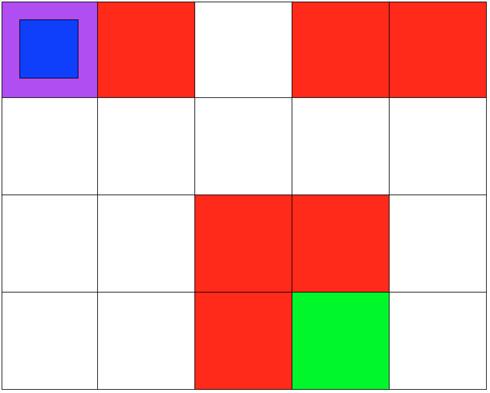
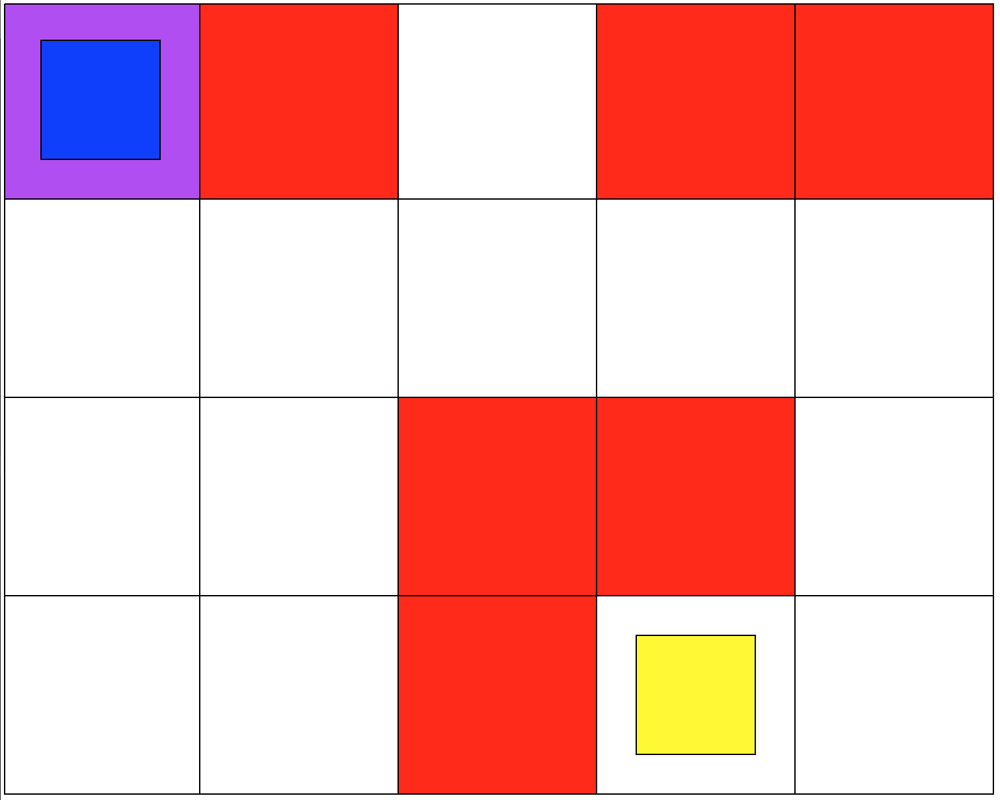
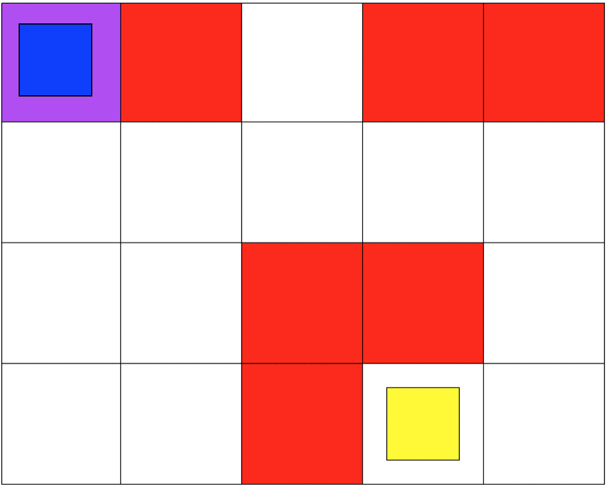
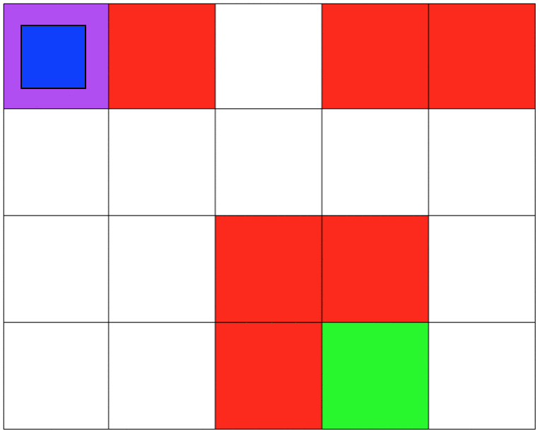

With Reinforcement Learning's (RL) increases in popularity, the more research we have been seeing concerning the safety of RL algorithms. Both in regards to the agent's safety and the safety of any element in the agent's environment (objects, humans, animals, etc.). This project is my introduction to RL and safe RL. I develop two grid-world simulation and RL algorithms from scratch, no ML or RL libraries, to experiment and test safety methods. After developing, training and deploying the agents I was able to achieve my goal. For every environment the agent was able to learn an optimal policy (shortest route) without falling into any crater. Github Reposiroty
An Introduction to Safe Reinforcement Learning
The use of Reinforcement Learning (RL) techniques to build autonomous agents and systems is becoming more widespread. With the rise in popularity we have also seen a growing interest in studying safety concern with relation to RL algorithms. On one hand, we have the safety of the learning agent during training, on the other hand we want to ensure that the agent is capable to learn policies that are safe to deploy. For example, in simple terms, we want to be able to safely train an autonomous car and ensure that once it's trained it won't be responsible for any accidents.
Safe Reinforcement learning has it's own complexity. Given that RL is based on learning by exploring and experiencing, how can an agent learn to be safe without experiecing unsafe scenarios? Furthermore, for some tasks, threat of safety may be very infrequent and it is hard to ensure that the training set includes enough of these to ensure that safety-preserving behaviors are learned. Also, some reinfocement learning techniques construct their own representations of the domain (e.g., deep learning) and it is hard to ensure that these representations carry the necessary information to ensure safety, and that the resulting policies/strategies are safe.
Reinforcement learning and Safe RL are field of study that I am very intrested in. After reading some theory [1] on RL and learning about the work being done on safe RL [2] I thought it would be a good idea to develop some algorithms myself. For this project I develop two grid-world environments and a RL algorithm for each environment. Everything is developed from scratch, meaning that I didn't use any ML or RL libraries.
Both environments involve 5x4 grids limited by four borders. The agent will be able to move from one grid to another by performing 1 out of 4 possible actions (Up, Down, Left and Right). The first set of grid-world environments are Navigation simulations. It consists of a 'planetary robot' looking travel from a starting point to a specified target destination while avoiding to fall into 'craters'.
The second set of grid-world environments are Mineral Collection simulations. It consists of a planetary robot looking to collect mineral ore and bringing it back to its starting position while avoiding to fall into 'craters'. In the case of the Mineral Colection environment the agent will automatically pick up the ore when it reaches it's position.
- 
- 
I implemented the Q-learning algorithm presented in Richard Sutton's textbook [1]. It helped me better understand Reinforcement Learning and the difference between off-policy and on-policy learning. I wanted to develop a single Q-learning algorithm that could be used to solve any RL problem, as long as the problem trying to be solved is performed in an environment with a finite set of states (including an initial state and a goal state), a finite set of actions, a set of rewards and a transition matrix.
In terms of safety, for this project I focused on making sure that the agent is capable of learning a policy that is safe to deploy. More specifically, make sure that the agent will not fall into any crater on deployment. In our MDP the unsafe states will be represented as states with negative reward associated to them. The hypothesis is that by looking maximizing the expected reward the agent will avoid those states that provide a negative reward. For both simulations the craters have a negative reward, and the target destination has a positive reward, all other states have a reward of 0. In the Mineral Collection environment picking up the mineral ore aslo has a positive reward.
After developing, training and deploying the agents I was able to achieve my goal. For every iteration of the Navigation and Mineral Collection environments the agent was able to learn an optimal policy (shortest route) without falling into any crater. The key was to test different values for the positive and negative reward, and parameter tune the Q-learning algorithm. If the punishment was too high, the agent would mainly focus on not falling and would avoid its actual goal or it would learn a non-optimal policy. If the reward was too high the agent wouldn't take the unsafe state into consideration and the resulting deployment would be very un-safe.
- 
- 
Even though my approach works, it had a lot to do with manually tunning several parameters in order to succeed, this is far from ideal. As mentioned earlier this is my introduction to Reinforcement Learning and Safe RL. In the future I will be focusing on more complex safety strategies for RL and work on the agent's safety during training.